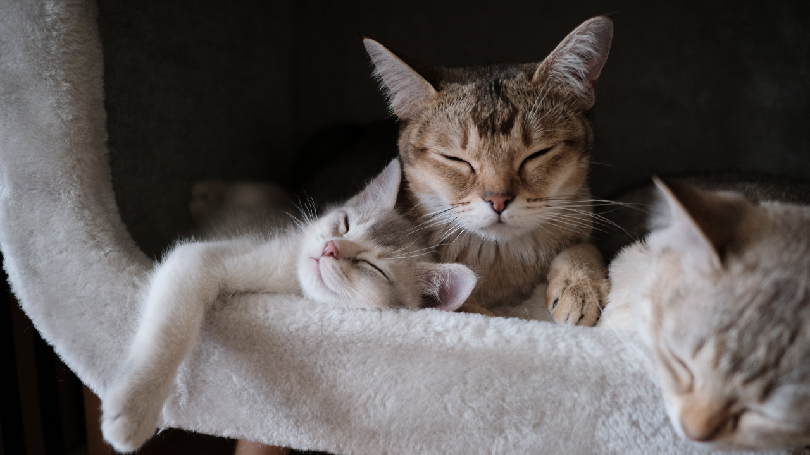

About Us
Welcome to Toe Beans, where passion meets purpose in our mission to make a difference in the lives of our feline friends. At Toe Beans Cat Rescue, we believe that every cat deserves a loving home and a chance to thrive. Our journey began with a shared love for these whiskered wonders and a commitment to creating a world where no kitty is left behind.
Founded with a heart full of compassion and a desire to make a lasting impact, Toe Beans Cat Rescue is dedicated to the well-being of cats in need. We are a non-profit organization driven by a team of devoted volunteers who pour their time, energy, and love into every furry friend we encounter. From abandoned kittens to senior cats looking for a second chance, we are here to provide a safe haven and a helping hand.
Toe Beans Cat Rescue is more than just a charity; it's a community united by the common goal of creating a brighter future for cats in distress. With every rescue, adoption, and outreach effort, we strive to raise awareness about responsible pet ownership, spaying and neutering, and the importance of treating our feline companions with the love and respect they deserve.
Our journey is marked by the joy of successful adoptions, the resilience of our rescue stories, and the camaraderie of our passionate supporters. Join us in the pursuit of a world where every cat is cherished and every toe bean is appreciated.
Together, we can make a paw-sitive impact, one rescue at a time. Welcome to Toe Beans Cat Rescue, where every step forward is a step toward a brighter, happier future for cats in need.